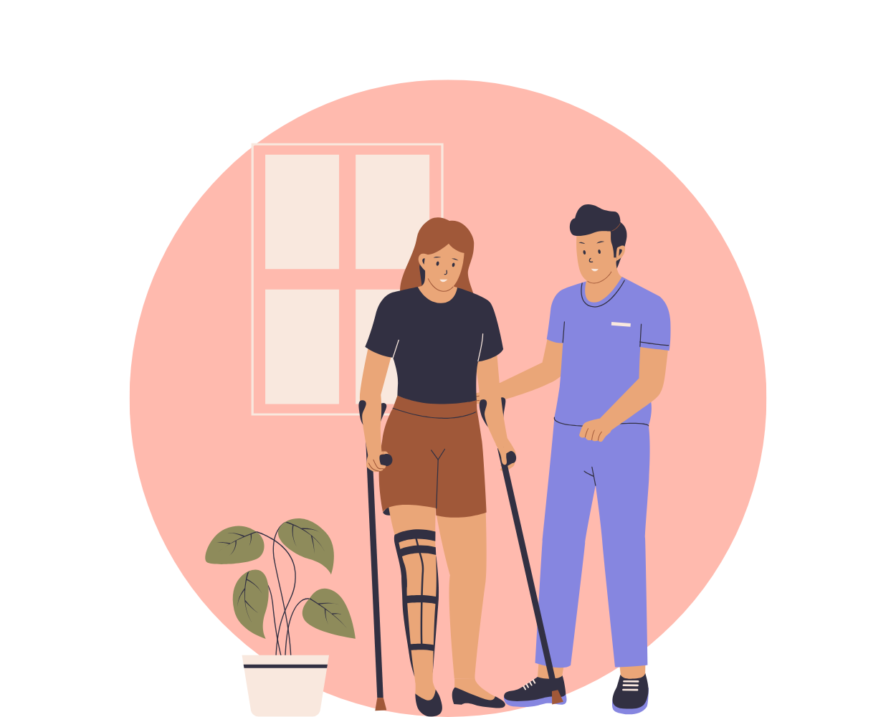

Rehabiliteringsplanens syfte
Rehabiliteringsplanen är ett verktyg med syftet att underlätta arbetsgivarens arbete med att stödja arbetstagaren vid återgång i arbetet. Planen bör tas fram i samråd med arbetstagaren och kan vid behov även innefatta en arbetstagarrepresentant eller ombud. Arbetsgivaren ansvarar för att planen följs och revideras vid förändrade förhållanden.

Bedömning av arbetstagarens situation
En viktig del av rehabiliteringsarbetet är att ta ställning till arbetstagarens möjligheter att återgå i arbete. Det krävs att en bedömning görs av vilken av följande tre situationer som bäst beskriver läget:
- Arbetstagaren kan återgå helt i ordinarie arbete utan särskilda åtgärder:
Återgång i arbete är möjlig oberoende av sjukskrivningens längd, och inga anpassningar krävs. - Det är uppenbart att arbetstagaren inte kommer att kunna återgå i arbete:
Oavsett vilka åtgärder som vidtas är det tydligt att återgång till arbete inte är möjlig. - Arbetstagarens hälsotillstånd tillåter inte att en plan tas fram för tillfället:
Om hälsotillståndet förhindrar en omedelbar rehabiliteringsplan, får planen vänta tills arbetstagaren är i ett bättre hälsotillstånd.